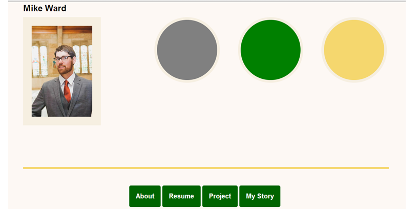

Custom Maps
Add progressive enhancement to your site with custom map builds against the Google Map v3 API.
301 York St.,Louisville, KY 40203 858 Parkway Dr.,
Louisville, KY 40217

Original Resume
View the initial build of my site to track my progress through the Code Louisville 2.0 project. Recent updates include use of the Twitter Bootstrap framework and a mobile-first approach to enhance responsive design.